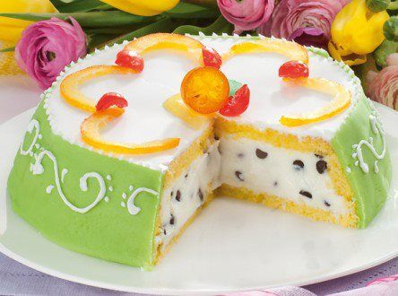
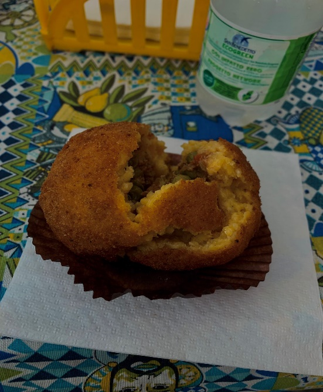
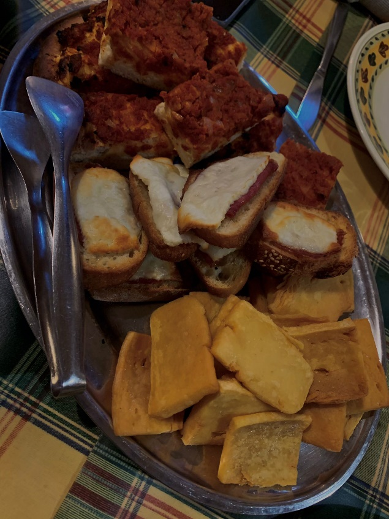

Il cibo è arte, è tradizione, è cultura.
DOLCI:
- cannolo
- cassata siciliana
- granita
- sfincia di S. Giuseppe
SALATO:
- arancine
- anelletti al forno
- pane e panelle
Alcune delle foto sono state scattate direttamente da noi.
CANNOLO
Il cannolo siciliano è sicuramente uno dei dolci più conosciuti, amati e soprattutto esportati in tutto il mondo. Simbolo dell’arte dolciaria isolana, è una delle specialità della pasticceria italiana più apprezzate da un capo all’altro della Penisola e all’estero. Inserito nell’elenco dei Prodotti Agroalimentari Tradizionali (P.A.T.) tenuto dal Ministero delle politiche agricole e forestali, il cannolo siciliano tradizionale è fatto con una cialda fritta a forma di tubo ripiena di ricotta di pecora, ma la farcitura può essere varia: dalla crema pasticciera alla chantilly, dalla ricotta di bufala alla crema di pistacchio al cioccolato. La storia del Cannolo Siciliano è per alcuni versi incerta. Quello che sembra certo è che il cannolo abbia inizi molto antichi e che nel corso del tempo ha subito notevoli variazioni fino a giungere ai giorni nostri nella forma e nella sostanza che tutti conosciamo. Ma l’ipotesi oggi tra le più accreditate farebbe risalire la nascita del cannolo al Convento di Santa Maria di Monte Oliveto a Palermo, esattamente dietro la Cattedrale. Ebbene anche secondo questa storia il Cannolo Siciliano altro non sarebbe che uno scherzo di carnevale ordito dalle simpatiche suore di clausura del convento, che avrebbero riempito una vasca di crema di ricotta ed avrebbero sostituito i classici rubinetti con la scorza dei cannoli. A sostenere questa ipotesi anche il fatto che in siciliano la parola cannolo vuol dire proprio rubinetto. Secondo alcuni lo scherzo era diretto alle novizie; secondo altri ad un sacerdote; secondo altri ancora ai parenti che il giorno di carnevale si erano recati in convento per fare visita alle proprie figlie. Oggi esistono svariate versioni di questo dolce. A Palermo per esempio sono nati i cannolicchi, ovvero i cannoli in forma ridotta, grandi quanto un dito, ma dall’identico sapore. Al contrario, nella zona di Piana degli Albanesi, sono nati i cannoli giganti, per i più temerari e gli amanti dei dolci. Nella zona di Trapani, come a Dattilo e a Fulgatore, esistono i cannoli sempre di grandi dimensioni ma con la ricotta più grezza, poco elaborata e con meno zucchero. In alcune zone della Sicilia la crema viene spolverizzata con granella di pistacchi o nocciole. In altre zone non viene messo il cioccolato nella ricotta e neppure decorazioni con frutta candita. Quello che è certo è che gli ingredienti principali sono la scorza e la crema di ricotta.
CASSATA SICILIANA
È alla Palermo del periodo arabo che bisogna risalire, in quella che all'epoca (XI secolo) era la città più grande d'Europa. Gli Arabi avevano importato nell'isola vari prodotti: dal pistacchio agli agrumi, dalla mandorla alla canna da zucchero. Secondo la tradizione, una notte un pastore decise di mescolare la ricotta di pecora con lo zucchero o il miele. E chiamò questo dolce “quas’at” (“bacinella”), dal nome della ciotola in cui era contenuto l'impasto. Successivamente, alla corte palermitana dell'emiro in piazza Kalsa, i cuochi decisero di avvolgere l'impasto in una sfoglia di pasta frolla, da cuocere poi in forno. Nacque così la cassata al forno, la più antica delle versioni di questo dolce. La coloratissima variante oggi conosciuta al grande pubblico è il risultato di un'evoluzione proseguita in epoca normanna con l'invenzione, presso il convento della Martorana a Palermo, della pasta reale (o pasta martorana), a base di farina di mandorle. Nel Settecento, da Genova, arrivò il pan di Spagna a sostituire la pasta frolla; alla ricotta vennero aggiunte scaglie di cioccolato; e con la pasta martorana vennero create delle decorazioni alle quali si aggiunsero anche quelle create con la frutta candita e la glassa di zucchero: siamo così arrivati alla coloratissima cassata che oggi conosciamo, “codificata” nel 1873 dal pasticciere palermitano Salvatore Gulì.

GRANITA
Tra i nobili delle famiglie patrizie, con l’avvento delle calde temperature estive, era consuetudine comprare la neve dell’Etna raccolta d’inverno dal “nevarolu”, e farla conservare in apposite “case neviere” in vista della stagione estiva. Queste neviere private, ad uso domestico, erano ubicate in anfratti naturali e in luoghi particolarmente freschi, per riparare la neve dal caldo e conservarla più a lungo. La neve veniva grattata e utilizzata nella preparazione di sorbetti e gelati da degustare nei momenti di calura, versandovi sopra spremute di limone o sciroppi di frutta o di fiori.
La granita veniva preparata in diversi gusti, con il caffè e con i limoni, gelsi e mandorle della nostra zona. Infatti nel nostro territorio acese oltre alla coltivazione dei limoni e dei gelsi.
Impalpabile al palato essendo a base di acqua, zucchero e frutta, la granita così preparata ha soppiantato nei secoli la “rattata”.
Nel corso del XX secolo, nella formula moderna della “Tradizionale Granita Siciliana” mentre la neve è stata sostituita con l’acqua ed il miele con lo zucchero, il pozzetto manuale raffreddato da ghiaccio (o neve) e sale, grazie alla tecnologia del freddo (mantecatore), è stato sostituito dalla gelatiera, consentendo di produrre quell’inconfondibile impasto cremoso, privo di aria e ricco di sapore che, grazie alle sue peculiari caratteristiche, è conosciuto e vantato nel mondo con il nome di “Granita Siciliana”.
LA SFINCIA DI S. GIUSEPPE
Tradizionalmente la si mangia il 19 marzo, per la festa di San Giuseppe in Sicilia ma, vista la sua bontà, la si trova nelle pasticcerie durante tutto l’anno. Il nome sfincia significa “spugna” (latino “spongia”) e deriva dall’arabo “isfang“. Si tratta di una grossa e voluminosa frittella, arricchita da crema di ricotta, gocce di cioccolato e canditi. A quanto pare, l’origine è da rintracciare in dolci arabi o persiani fritti nell’olio. A trasformare questa semplice frittella in un dolce, con l’aggiunta della ricotta, furono le suore del monastero delle Stimmate di San Francesco, che si trovava anticamente in piazza delle Stigmate, a Palermo. Loro l’hanno tramandato ai pasticceri palermitani, dedicandolo a San Giuseppe.
LE ARANCINE
Se la parte occidentale dell’isola, Palermo in testa, appella al femminile il caratteristico timballo di riso prelibatamente condito e racchiuso da doratura fritta in sferica forma, quella orientale e meridionale prediligono, invece, l’arancino: conico, maschio. E considerando la fama mondiale di uno dei più tipici street food della Trinacria, si tratta di uno scisma di natura quasi religiosa. Quanto alle origini, la tradizione ci rimanda al periodo di dominazione araba, tra il IX e XI secolo. Durante i banchetti infatti, i saraceni usano collocare a centro tavola un ampio vassoio carico di riso aromatizzato con zafferano e insaporito con verdure, carne e altri aromi. I commensali allungano la mano, appallottolano il riso nel pugno e lo gustano dopo averlo condito con carne di agnello. La panatura è un’invenzione successiva, ma geniale. La croccante corazza dorata, ottenuta mediante la frittura, trasforma il godurioso pasticcio in cibo da viaggio. Tra le mille varianti, è quello al ragù il più illustre esponente dell’immensa famiglia. Ingredienti base della ricetta dell’arancino sono il riso bollito (quasi sempre aromatizzato con zafferano), la carne macinata (bovino, maiale o vitello), la salsa di pomodoro (rigorosamente in ragù con soffritto di carota, sedano, cipolla e spesso piselli) e il formaggio a pasta filata (mozzarella, provola o cacio). Unico il tipo di cottura: la pallottola di riso, immersa in pastella e impanata, è sapientemente fritta fino a doratura.

ANELLETTI AL FORNO
Gli anelletti al forno alla palermitana sono una ricetta siciliana della tradizione. Si tratta di un ricco timballo che utilizza uno specifico formato di pasta: gli anelletti, piccoli cerchietti, che accolgono un condimento saporito. Chiamati genericamente pasta al forno. Gli anelletti sono probabilmente nati tra Trabia e Termini Imerese, nei mulini costruiti dagli Arabi. La ricetta originale è andata, nel corso del tempo, incontro a diverse variazioni. Una certezza è sicuramente quella del ragù. Per quanto riguarda il formaggio, la ricetta originale prevederebbe la tuma. Grandi dispute sono sorte in merito all’utilizzo di melanzane e uova sode. L’idea di una pasta forata nasce nel Medioevo. Possiamo dunque collocare gli anelletti in questo periodo. Stando ad alcune leggende, avrebbero ripreso la forma degli orecchini che le donne arabe indossavano in Sicilia.
PANE E PANELLE
Altro non è, che una piccola frittatina che ha come ingrediente principale la farina di ceci, una macinata di pepe e un goccio di limone appena spremuto. Viene solitamente servita dentro a delle pagnotte tonde che si chiamano Mafalde. Tipico formato di pane siciliano ricoperto di semi di sesamo. Il Pane farcito con le panelle si può facilmente acquistare nelle friggitorie (anche ambulanti) presenti in tutta Palermo. Già in epoca romana i ceci erano largamente utilizzati in cucina, specialmente sotto forma di polenta: la farina di ceci era abitualmente consumata da tutte le popolazioni del Mediterraneo. Rappresentava dunque un modo pratico per utilizzare questi preziosi legumi durante tutto l’anno. In Sicilia furono gli Arabi, nella loro lunga dominazione, a sperimentare la macinazione dei semi di ceci per ricavare la farina che, mescolata all’acqua e cotta, dava vita ad un impasto simile alla polenta. Si suppone che le prime panelle fossero cotte sulla pietra dentro a forni verticali, solitamente usati per cuocere i pani di forma piatta, tipici della cucina mediorientale. Nel Medioevo, probabilmente durante il dominio angioino, in Sicilia si iniziò a friggerle. La letteratura del tempo, infatti, narra che gli Angioini ne fossero particolarmente ghiotti.
